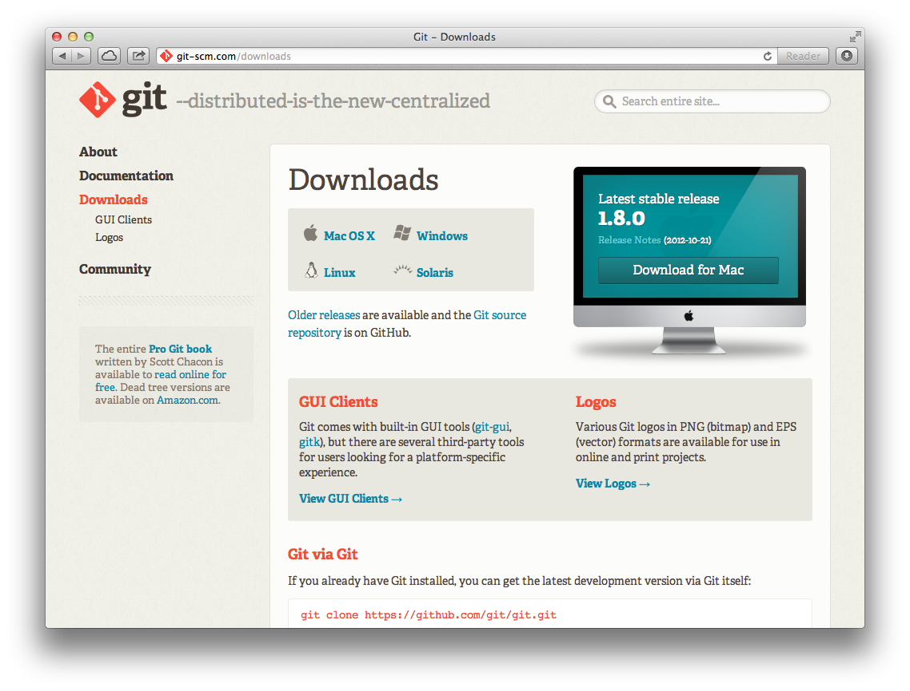
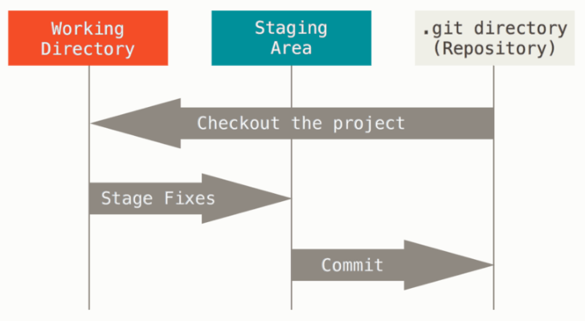
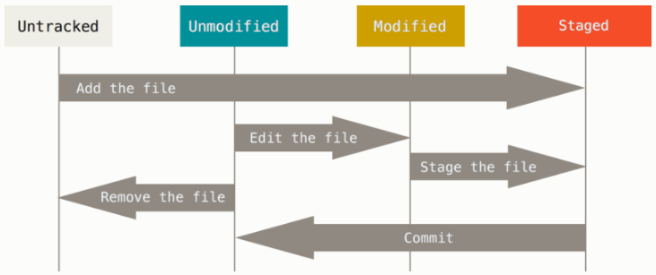

Version Control with Git
Hatem Mahmoud
hatem@expressionlab.com
Outline
- Introduction
- Git Basics
- Branching and Merging
- Updating and Sharing
- Trying Git
- Using GitHub
- Resources
Introduction
Version Control System
A system that records changes to a file or set of files over time so that you can recall specific versions later.
Benefits of Version Control
- A complete long-term change history of every file enables going back to previous versions and comparing changes over time.
- Branching keeps multiple streams of work independent while providing the facility to merge back.
- Traceability using annotation messages with each change to describe the purpose and connect it to project management tools.
Local Version Control

Centralized Version Control

Centralized Version Control

Distributed Version Control

Distributed Version Control

Distributed Version Control
- Most operations are local.
- Project's entire history is on your local disk.
- No network latency overhead.
- Work offline until you get to a network connection.
Git
- The most widely used distributed version control system.
- A mature, actively maintained open source project.
- Created in 2005 by Linus Torvalds, the creator of Linux.
Why Git
- Performance: branching, merging and comparing past versions are all optimized for performance.
- Security: files, directories, versions, tags and commits are all secured with a cryptographically secure hashing algorithm (SHA1).
- Flexibility: branching and tagging are first-class citizens; merging and reverting are stored as part of the change history.
Git Basics
Installing Git
Git Setup
$ git --version
git version 2.11.0.windows.1
$ git config --global user.name "Hatem Mahmoud"
$ git config --global user.email "hatem@expressionlab.com"
$ git config --list
user.name=Hatem Mahmoud
user.email=hatem@expressionlab.com
core.symlinks=false
core.autocrlf=true
core.fscache=true
...
Getting Help
$ git help
$ git help config
Initializing a Repository
$ mkdir ~/my-project
$ cd ~/my-project
$ git init
Initialized empty Git repository in ~/my-project/.git/
Cloning an Existing Repository
$ git clone https://github.com/HatemMahmoud/my-project.git
Cloning into 'my-project'...
remote: Counting objects: 3, done.
remote: Total 3 (delta 0), reused 0 (delta 0)
Unpacking objects: 100% (3/3), done.
The Three States
File Status Lifecycle
Checking Status
$ git status
# On branch master
#
# Initial commit
#
nothing to commit (create/copy files and use "git add" to track)
Creat a New File
$ touch README
$ git status
# On branch master
#
# Initial commit
#
# Untracked files:
# (use "git add <file>..." to include in what will be committed)
#
# README
nothing added to commit but untracked files present (use "git add" to track)
Stage the New File
$ git add README
$ git status
# On branch master
#
# Initial commit
#
# Changes to be committed:
# (use "git rm --cached <file>..." to unstage)
#
# new file: README
#
Commit Staged Files
$ git commit -m 'Added README'
[master (root-commit) d3b1065] Added README
1 file changed, 1 insertion(+)
$ git status
# On branch master
nothing to commit (working directory clean)
Modify a Committed File
$ nano README
$ git status
# On branch master
# Changes not staged for commit:
# (use "git add <file>..." to update what will be committed)
# (use "git checkout -- <file>..." to discard changes in working directory)
#
# modified: README
#
no changes added to commit (use "git add" and/or "git commit -a")
View Changes
$ nano README
$ git diff
diff --git a/README b/README
index 56266d3..9cbeb31 100644
--- a/README
+++ b/README
@@ -1 +1 @@
-Welcome
+Welcome to My Project
Discard Changes
$ git checkout README
$ git status
# On branch master
nothing to commit (working directory clean)
Stage Changes
$ git add README
$ git status
# On branch master
# Changes to be committed:
# (use "git reset HEAD <file>..." to unstage)
#
# modified: README
#
Unstage a Staged File
$ git reset HEAD README
Unstaged changes after reset:
M README
$ git status
# On branch master
# Changes not staged for commit:
# (use "git add <file>..." to update what will be committed)
# (use "git checkout -- <file>..." to discard changes in working directory)
#
# modified: README
#
no changes added to commit (use "git add" and/or "git commit -a")
Commit Changes
$ git add .
$ git commit -m 'Updated README'
[master 1302816] Updated README
1 file changed, 1 insertion(+), 1 deletion(-)
$ git status
# On branch master
nothing to commit (working directory clean)
View Commit History
$ git log
commit 1302816b21570a5ad712ee166e16e16dc12d011b
Author: Hatem Mahmoud <hatem@expressionlab.com>
Date: Wed Nov 7 00:19:54 2012 +0200
Updated README
commit d3b1065899c14c192ad9af0227615f4d665d4195
Author: Hatem Mahmoud <hatem@expressionlab.com>
Date: Tue Nov 6 23:59:26 2012 +0200
Added README
Ignore Some Files
# .gitignore
log/*.log
tmp/**
.DS_Store
Branching and Merging
Master Branch

Create a Branch
$ git branch iss53
$ git checkout iss53
Switched to a new branch "iss53"

Commit to Branch
# Update some files
$ git commit -a -m 'Changes for issue #53'

Create Another Branch
$ git checkout master
Switched to branch "master"
$ git checkout -b 'hotfix'
Switched to a new branch "hotfix"
$ git commit -a -m 'Fixed broken feature'
[hotfix]: created 3a0874c: "Fixed broken feature"
1 files changed, 0 insertions(+), 1 deletions(-)

Fast-forward Merge
$ git checkout master
$ git merge hotfix
Updating f42c576..3a0874c
Fast forward
README | 1 -
1 files changed, 0 insertions(+), 1 deletions(-)

Switch Back to Branch
$ git branch -d hotfix
Deleted branch hotfix (3a0874c).
$ git checkout iss53
Switched to branch "iss53"
$ git commit -a -m 'Finished changes for issue #53'
[iss53]: created ad82d7a: "Finished changes for issue #53"
1 files changed, 1 insertions(+), 0 deletions(-)

Three-way Merge
$ git checkout master
$ git merge iss53
Merge made by recursive.
README | 1 +
1 files changed, 1 insertions(+), 0 deletions(-)

Merge Commit

Merge Conflict
$ git merge iss53
Auto-merging index.html
CONFLICT (content): Merge conflict in index.html
Automatic merge failed; fix conflicts and then commit the result.
$ git status
index.html: needs merge
# On branch master
# Changed but not updated:
# (use "git add <file>..." to update what will be committed)
# (use "git checkout -- <file>..." to discard changes in working directory)
#
# unmerged: index.html
#
Conflict-resolution Markers
<<<<<<< HEAD:index.html
Some content here.
=======
Another content here.
>>>>>>> iss53:index.html
Resolve Conflicts
# Update some files
$ git add .
$ git commit -m 'Resolved conflict'
[master a541942] Resolved conflict
Updating and Sharing
Get Updates
# Fetch updates
$ git fetch origin
# Fetch updates and merge them
$ git pull
Push Commits
# Create a remote named "origin" pointing at your repo
$ git remote add origin https://github.com/HatemMahmoud/my-project.git
# Upload your commits in the "master" branch to the repo
$ git push origin master
Trying Git
Using GitHub
Resources
Thank You!
Hatem Mahmoud
hatem@expressionlab.com